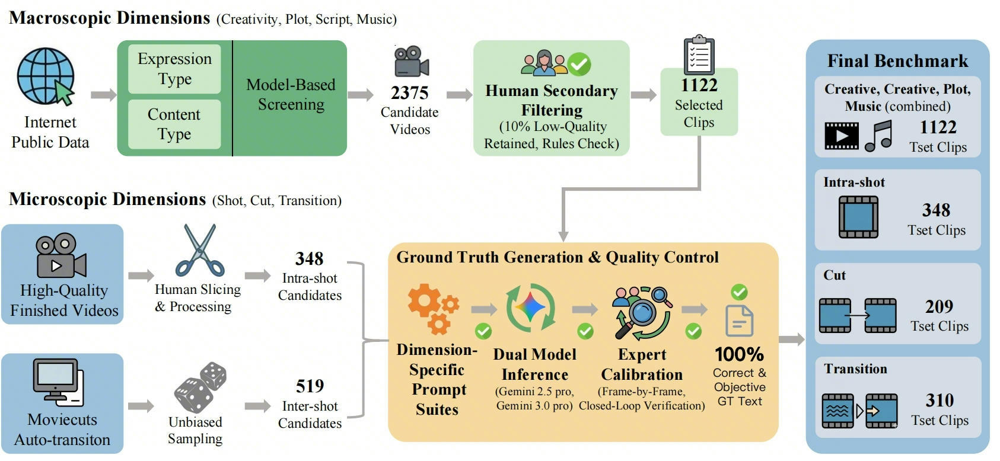
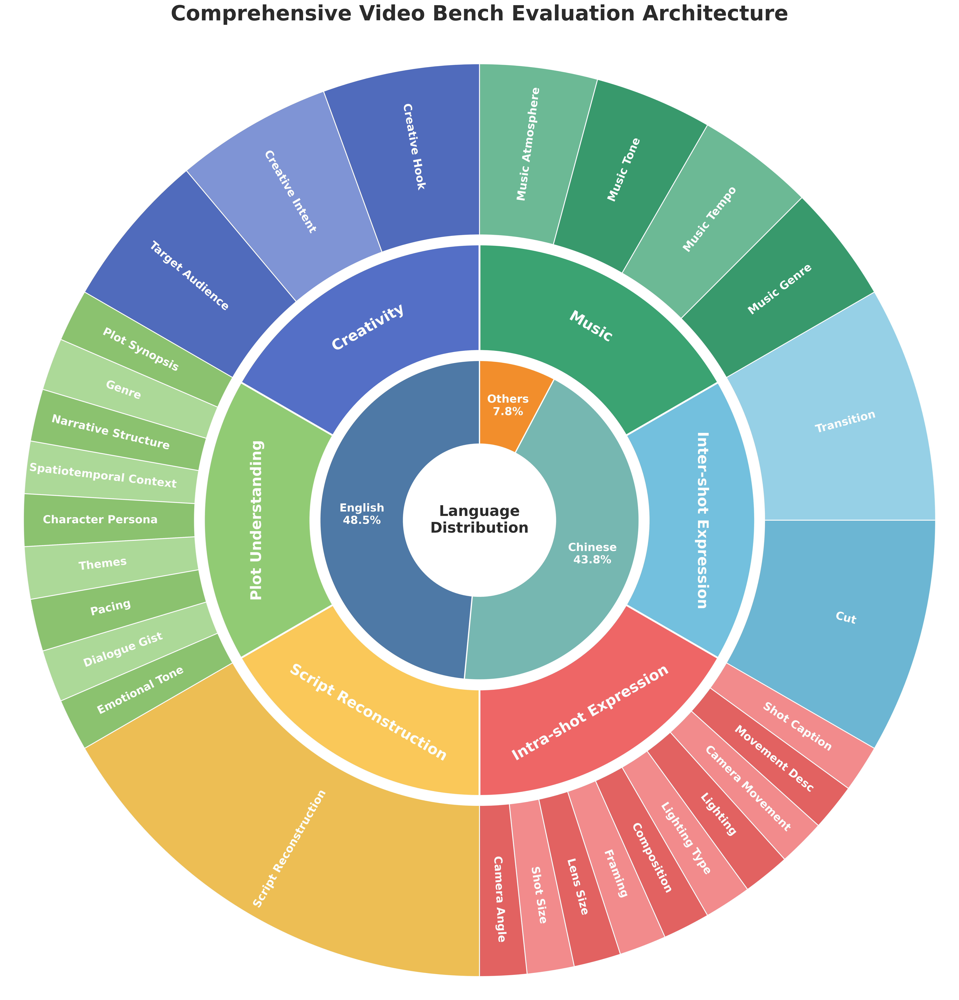
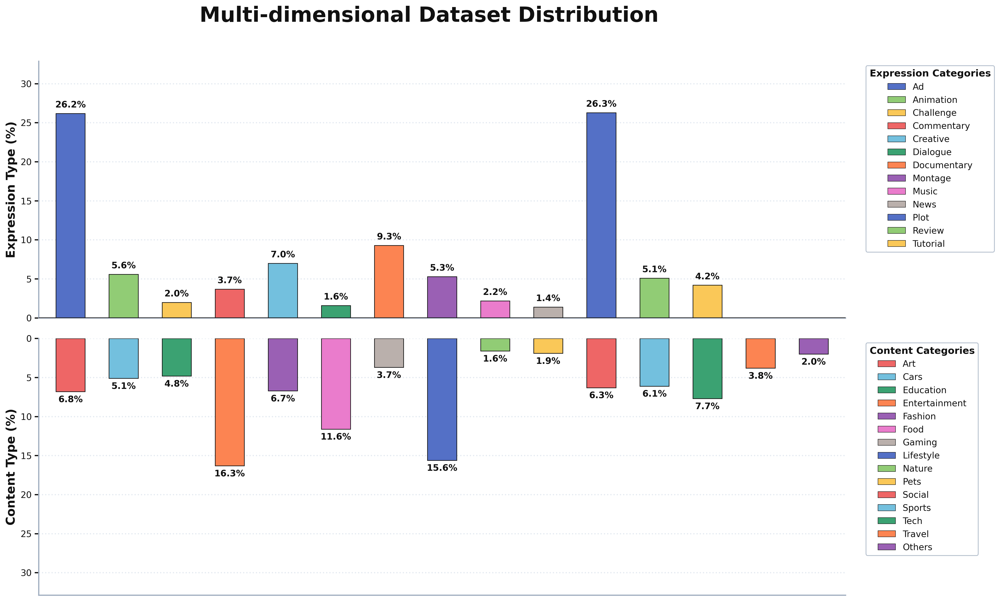
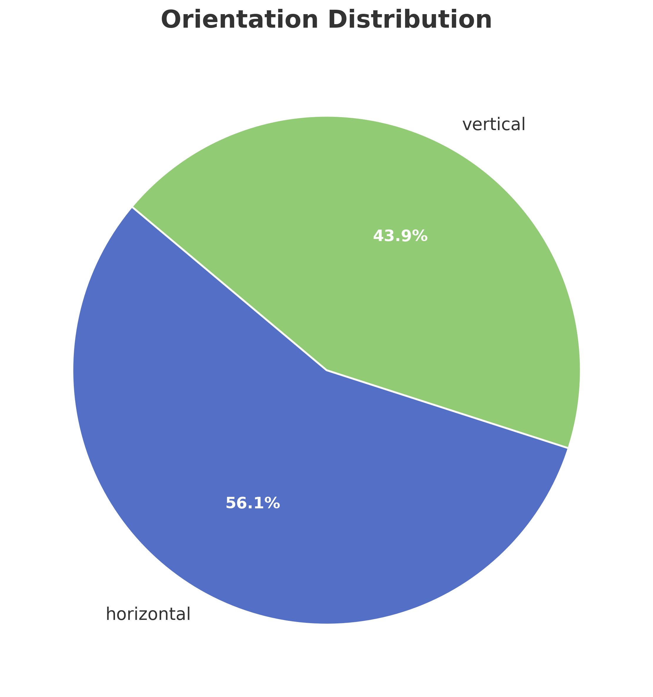
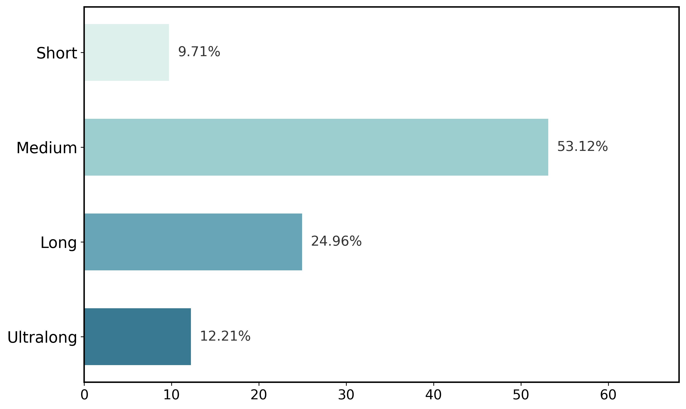
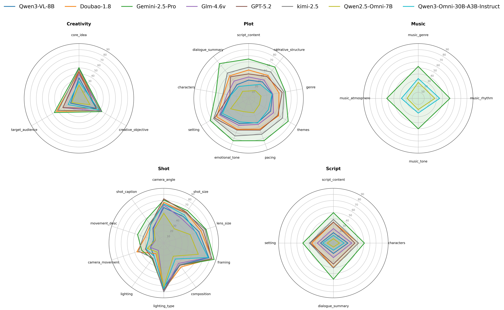
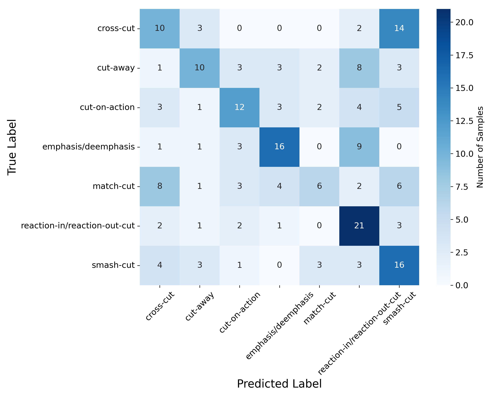
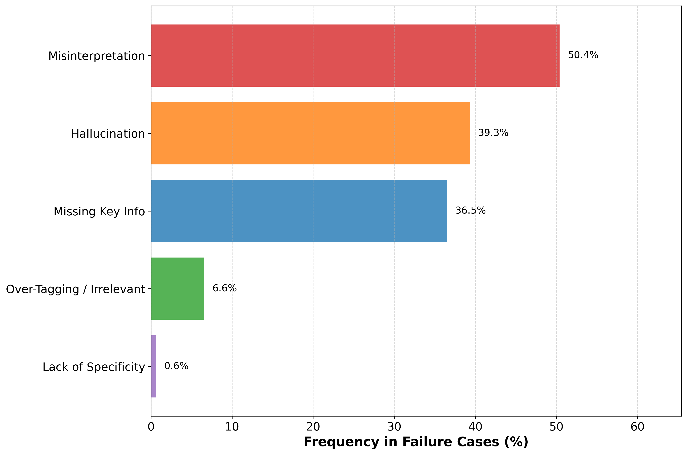

CUBench: A Comprehensive Creative Understanding Benchmark for Multimodal Large Language Models
Overview
Recent Multimodal Large Language Models have shown strong performance on video captioning, action recognition, and visual question answering, but current benchmarks still mostly treat videos as sequences of dynamic frames and focus on shallow objective perception. They remain weak at recovering the deeper creative logic of real-world video production, including narrative intent, script structure, cinematographic design, editing syntax, and audio-visual coordination.
CUBench is designed to bridge this gap by evaluating models through the full creative lifecycle of video production. It reverse-engineers video understanding into six industrial dimensions that mirror professional production roles, from director-level creativity and screenwriter-style plot understanding to shot composition, editing, and music. This design pushes evaluation beyond surface recognition toward deeper multimodal creative reasoning.

Comparison of Benchmarks
| Dataset | Creativity | Script | Plot | Shot | Cut | Transition | Music |
|---|---|---|---|---|---|---|---|
| MovieCuts | × | × | × | × | ✓ | × | × |
| AutoTransition | × | × | × | × | × | ✓ | × |
| AVE | × | × | × | ✓ | × | × | × |
| AVE-PM | × | × | × | ✓ | × | × | ✓ |
| Shot2Story | × | × | × | ✓ | × | × | × |
| VEU-Bench | × | × | × | ✓ | ✓ | ✓ | × |
| ShotBench | × | × | × | ✓ | × | × | × |
| CameraBench | × | × | × | ✓ | × | × | × |
| Ours (CUBench) | ✓ | ✓ | ✓ | ✓ | ✓ | ✓ | ✓ |
Table 1. Comparison of CUBench with existing video understanding benchmarks.
Statistics

Dimension architecture and multilingual coverage.

Content and expression distribution across the evaluation set.

Balance between landscape and portrait video formats.

Coverage from short-form clips to ultra-long narratives.
Figure 2. Comprehensive statistics of the CUBench evaluation set.
Experiment Results
| Model | Plot | Script | Creativity | Shot | Cut | Transition | Music | Avg. |
|---|---|---|---|---|---|---|---|---|
| Qwen2.5-Omni-7B | 08.42 | 20.33 | 18.81 | 37.05 | 28.23 | 47.10 | 22.58 | 26.07 |
| Qwen3-Omni-30B | 14.97 | 35.24 | 28.84 | 48.23 | 29.67 | 63.55 | 29.92 | 35.77 |
| Qwen3-VL-8B | 19.79 | 38.48 | 27.47 | 46.62 | 32.54 | 54.19 | --- | 36.52 |
| GLM-4.6v | 26.09 | 42.55 | 37.35 | 44.60 | 37.32 | 55.48 | --- | 40.57 |
| GPT-5.2 | 35.69 | 50.18 | 35.68 | 53.49 | 45.45 | 61.94 | --- | 47.07 |
| Doubao-1.8 | 37.82 | 51.34 | 42.37 | 53.85 | 40.67 | 71.94 | --- | 49.67 |
| Kimi-2.5 | 40.08 | 58.14 | 42.57 | 46.62 | 44.98 | 71.61 | --- | 50.67 |
| Gemini-2.5-Pro | 52.58 | 68.70 | 46.85 | 58.34 | 43.54 | 70.00 | 51.60 | 55.94 |
Table 2. Comprehensive evaluation results of SOTA MLLMs on CUBench.

Sub-dimension scores across plot, creativity, script, music, and shot-related dimensions.

Models often confuse cut types because they capture visual change without narrative context.

Low-scoring responses are dominated by semantic misinterpretation, hallucination, and missing key information.
Findings
Current MLLMs remain far from reliable creative co-pilots. Even the top-performing model, Gemini-2.5-Pro, reaches only 55.94% overall on CUBench.
Implicit narrative reasoning is still the major bottleneck. Models can often summarize dialogue or recognize settings, but struggle to infer character relations, deep script logic, and creative intent.
Cinematic grammar is not truly understood. In cut and shot analysis, models often rely on superficial visual shortcuts instead of reasoning about temporal and narrative structure.
Audio-visual synergy remains difficult. Music understanding scores are modest, indicating that current multimodal systems still have limited ability to align soundtrack cues with visual storytelling.
Task Examples
Examples of benchmark tasks and qualitative cases will be added here.
BibTeX
@inproceedings{cubench2026,
title={CUBench: A Comprehensive Creative Understanding Benchmark for Multimodal Large Language Models},
author={Authors to be updated},
booktitle={CVPR},
year={2026},
note={Project page links will be updated}
}